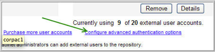
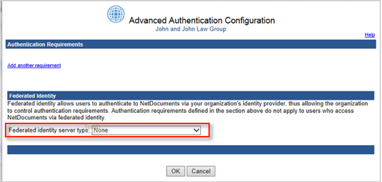
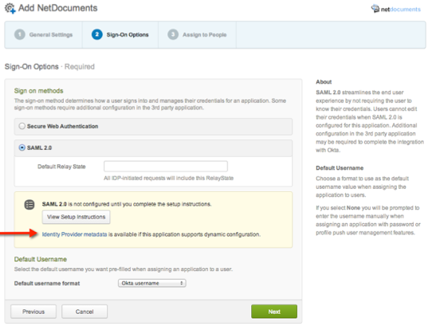
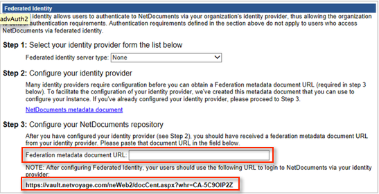

This setup might fail without parameter values that are customized for your organization. Please use the Okta Administrator Dashboard to add an application and view the values that are specific for your organization.
Sign into NetDocuments.
Select Admin in the upper right corner.
Navigate to Add and remove users and groups.
Select Configure advanced authentication requirements at the bottom of the page, as shown below.

In the Federated Identity section, select Okta as the Federated identity server type, as shown below.

In Okta, copy the link associated with the text Identity provider metadata, shown below.

IMPORTANT: Only copy the link to the metadata. Do not copy and paste the metadata.
Paste that link into the Federated Metadata document URL field in Step 3, as shown below.

Note the URL to login to NetDocuments that is provided, as shown above.